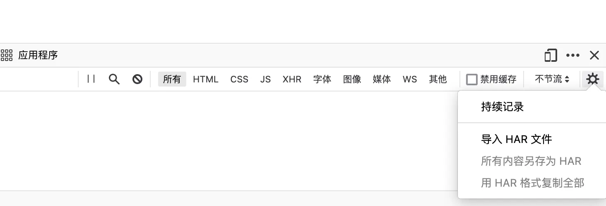
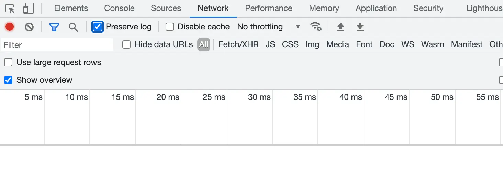
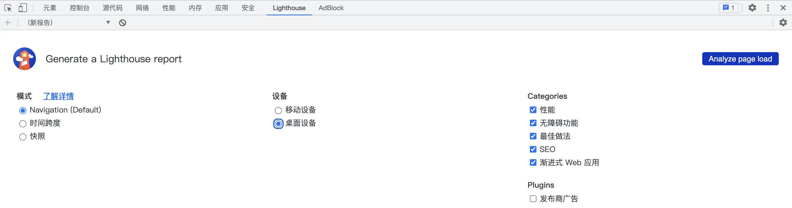
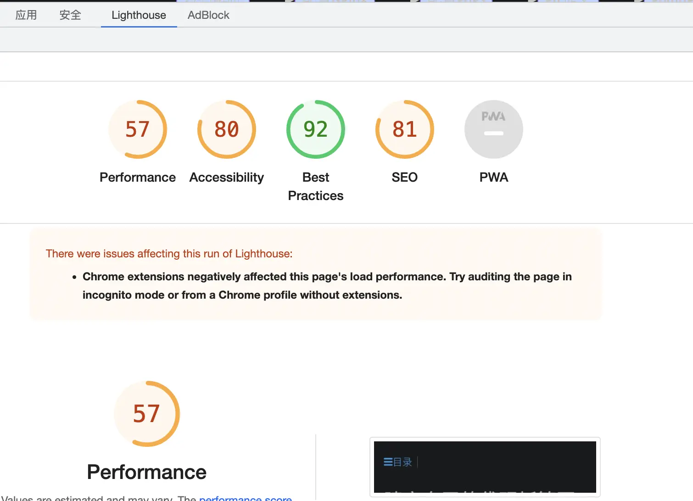

Firefox
AI 导读一分钟导读，先掌握全文主干。
核心观点
- 扩展组件安装与常见故障：「此附件组件无法安装，未通过验证」说明与绕过
- 文末浏览器更新（2024-2026）对齐新版变化
关键结论与取舍
- 未签名扩展需开发模式加载，日常使用以官方商店为主
- 定期跟进 2024-2026 更新，新版安全策略更严
-
扩展组件
- 实际上就是 zip 压缩后，直接改后缀名 xpi
- 注意不能直接压缩整个目录，应该选中扩展文件本身压缩，否则会被判为损坏（多了一层目录）。
- 现代 Firefox 正式版强制要求扩展通过 AMO 签名，否则不能安装运行
-
「此附件组件无法安装，未通过验证」
- 打开 Firefox 浏览器
- 地址栏输入「about:config」
- 搜索「xpinstall.signatures.required」设置项，双击改为「false」，重启
- 再把 xpi 拖进 Firefox 窗口便会提示是否安装
- 注意：
xpinstall.signatures.required仅对 Developer Edition / Nightly 生效；正式版强制 AMO 签名，未签名扩展需经about:debugging临时加载
-
优秀插件
- Dark Reader—— 推荐使用 ，把网站改成暗黑主题，少数网站表现不好
- uBlock Origin—— 推荐使用 去广告
- sourcegraph—— 推荐使用 浏览器享受 IDE 级别待遇
- savetopdf——自动把网页转化为 PDF
- es-client——Elasticsearch 客户端
- Elasticvue——Elasticsearch 客户端
- autocopy——自动复制选中内容
- 探索者小舒——一键切换多个搜索引擎
- Vue.js devtools——Vue.js 开发助手
- jsonview——在浏览器中查看 JSON 文件
- Hoppscotch（原 Postwoman）——优秀 API 测试插件
- monknow 新标签页，美观且允许高度自定义的新标签页扩展插件
- chrome://flags/#enable-force-dark（Chrome 浏览器）自带强制暗黑模式
-
开发者模式——禁止网页跳转自动清除日志
- 禁止页面跳转导致控制台日志自动清除


- 禁止页面跳转导致控制台日志自动清除
-
lighthouse——Chrome 出品网站优化建议报告，dev-tools 自带，方便又快捷


-
Firefox 开发者专用版，获取最新的开发者工具，帮助调试很多问题
-
- MDN——Mozilla 开发者社区（MDN）是一个完整的学习平台
- 临时加载的脚本扩展，必须用 cmd+shift+j 调出浏览器控制台，勾选「显示消息内容」，才能看到日志；
- PWA（Progressive Web App）——渐进式 Web 应用，利用缓存+在线网站构建本地应用
-
WebDriver 是远程控制接口，可以对用户代理进行控制。它提供了一个平台和语言中性线协议，作为进程外程序远程指导 web 浏览器行为的方法。
-
有空实现插件
- 浏览器扩展类似 go search、python search
- 浏览器扩展把 github 有关 hg 项目生成 PDF
- dial，类似 monknow
- 批量 html 转化成 PDF
浏览器更新（2024-2026）
- Firefox：v136+（2025-02）原生支持垂直标签页与侧边栏布局，摆脱对 Tree Style Tab 等扩展的依赖。
- Arc Browser：创新标签管理和侧边栏设计；母公司 The Browser Company 已转向 AI 浏览器 Dia。
- Zen Browser：基于 Firefox 的社区发行版，隐私优先，深度支持主题与垂直标签。
- Brave：内置广告拦截和 Tor 支持。